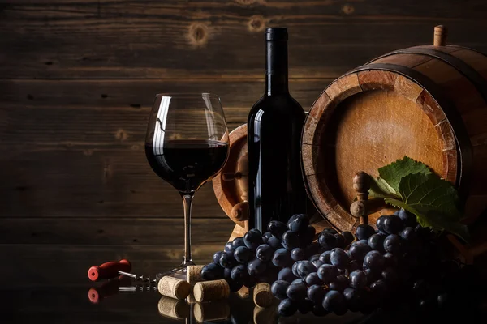
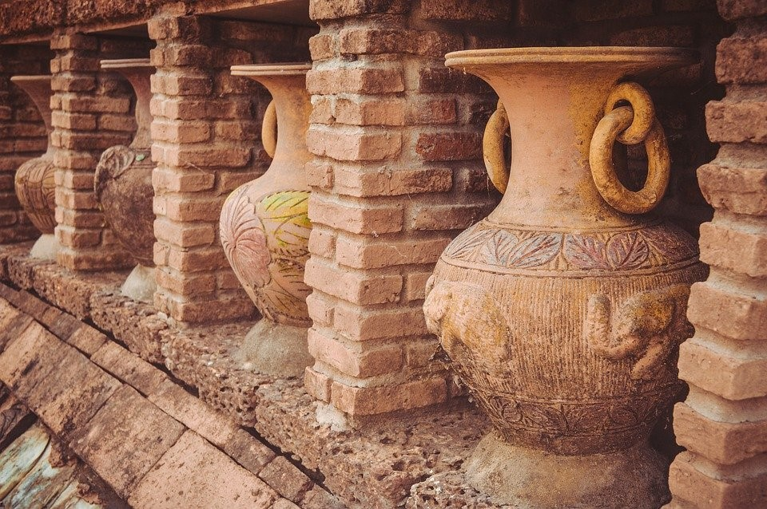
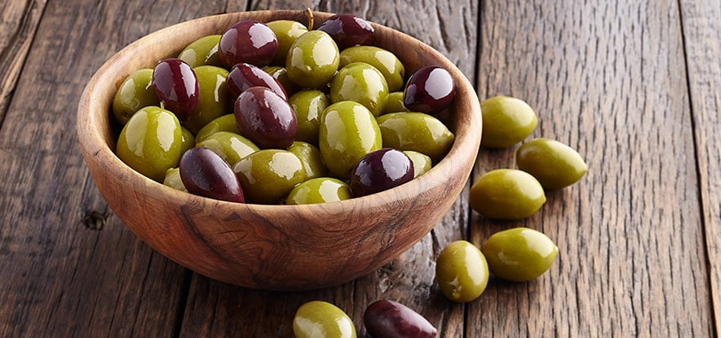

O comércio romano reunia produtos de diferentes regiões do Império.
Um dos principais alimentos da população romana, utilizado principalmente na produção de pão.
Era utilizado na alimentação, iluminação e também em cuidados pessoais.

Uma bebida muito presente nas refeições e celebrações do mundo romano.

Ânforas e outros recipientes eram utilizados para armazenar e transportar mercadorias.

Faziam parte da alimentação e também eram utilizadas para produzir azeite.
Produtos vindos de regiões distantes, usados principalmente para temperar alimentos.